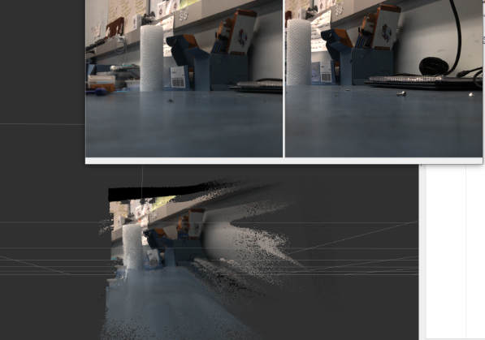

Final Report
Real-time stereo camera implementation, from scratch, on a Rubik PI.
Pointcloud visualization with original images for reference:

Real-time stereo camera implementation, from scratch, on a Rubik PI.
Pointcloud visualization with original images for reference:
